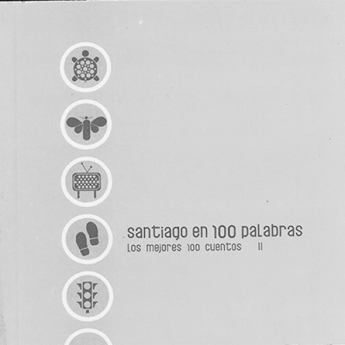
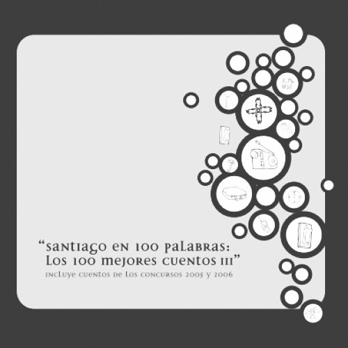
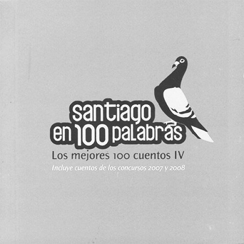
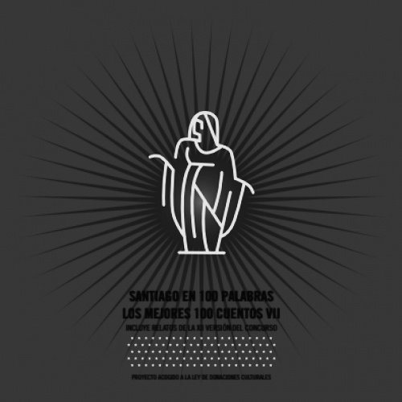
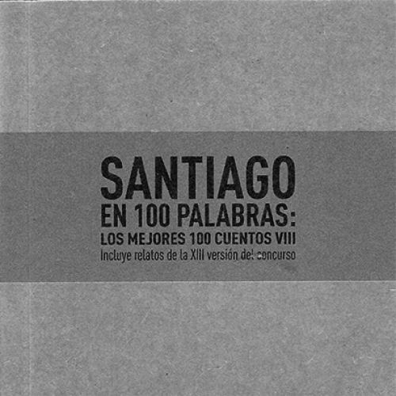
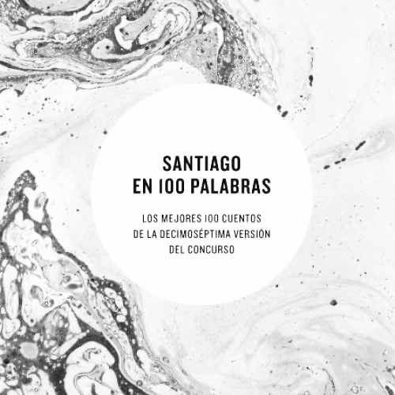
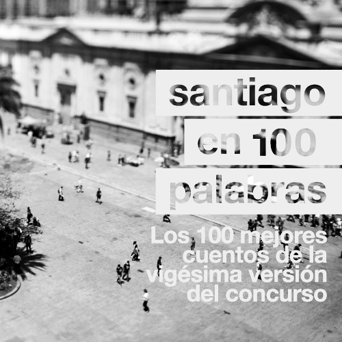
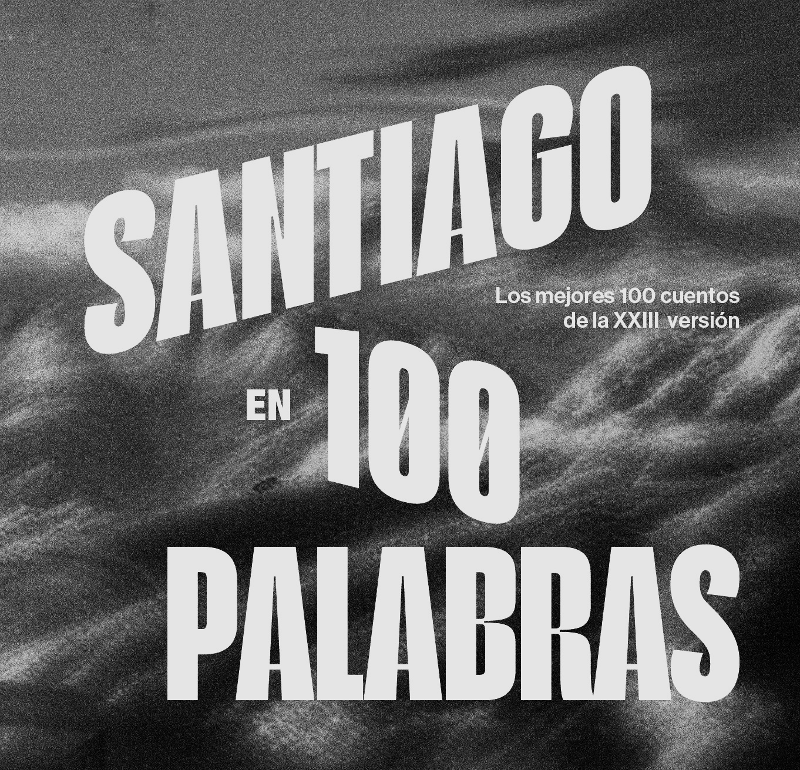
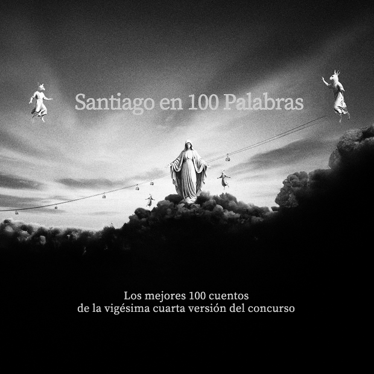

SANTIAGO EN 100 PALABRAS
La Fundación Plagio ha realizado este concurso de manera casi ininterrumpida desde 2001.
25 años | 21 ediciones.
Dos conmemorativas y 19 anuales | 1.900 cuentos premiados.
Los 100 mejores de cada año | entre miles de enviados.
En Chile hay 346 comunas. Si bien todas ellas pueden participar del concurso, el 89% son de la Región Metropolitana.
Demás está decir que concursar no asegura un puesto en el salón de honor. Son cientos de miles los cuentos que año a año llegan. Es difícil identificar una tendencia respecto a cuantos llegan, no así respecto a cuantos quedan.


















La comuna, pero no por cantidad de habitantes
Sino por la vulnerabilidad. A menor vulnerabilidad, mayor es la presencia dentro de los 100 mejores cuentos.
El gráfico muestra una correlación negativa donde, a medida que una comuna se desplaza hacia la derecha del eje X (pobreza), su presencia cae drásticamente hacia el suelo del gráfico.
Las comunas que registran una sola presencia dentro de los cuentos reconocidos son, coincidentemente, las que encabezan el ranking de pobreza multidimensional: Talagante (17%), Isla de Maipo (22%), San José de Maipo (24,5%) y casos críticos como María Pinto (27,2%) o Tiltil (29%).
El punto más extremo lo ocupa San Pedro, la comuna más pobre de la región con un 32%, cuya burbuja en el gráfico se sitúa en casi el cero.
educación
Santiago históricamente ha tenido un componente educacional que difiere de otras comunas.
Si bien hoy ha vilipendiado su reputación, los liceos emblemáticos (colegios públicos de excelencia académica) fueron por años los mejores centros educacionales del país, en su mayoría liceos repartidos por Santiago Centro. Si bien no hay un componente de capital económico exageradamente distinto al promedio regional, sí se puede inferir que existe, al menos, una diferencia en capital cultural: también importante para efectos de la calidad al momento de escribir.
"Esos primeros meses en el Instituto Nacional fueron infernales. Los profesores se encargaban de decirnos una y otra vez lo difícil que era el colegio; intentaban que nos arrepintiéramos, que volviéramos al liceo de la esquina, como decían de forma despectiva, con ese tono de gárgaras que en lugar de darnos risa nos atemorizaba."
— Alejandro Zambra, Mis Documentos.
Dicho esto, los numeros no son del todo desesperanzadores
Comunas como Vitacura y La Reina fueron, a medida que pasaban las ediciones, dejadas atrás por comunas como Puente Alto y Maipú. ¿El factor común entre ambos pares? Las primeras dos encabezan los rankings en ingresos comunales, y las dos últimas están lejos de aquello.
Quizá es solo cuestión de tiempo para que comunas como Talagante, La Pintana o San Ramón, comiencen a hacerse un espacio en el de este concurso.